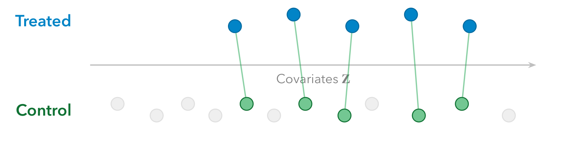
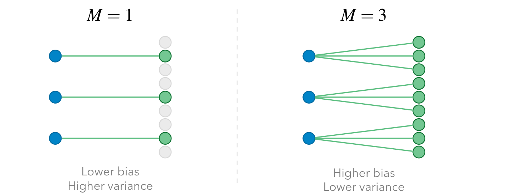
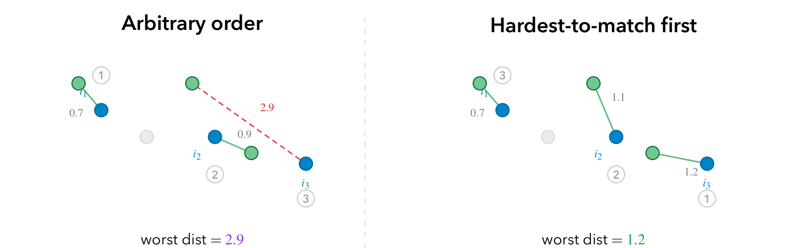
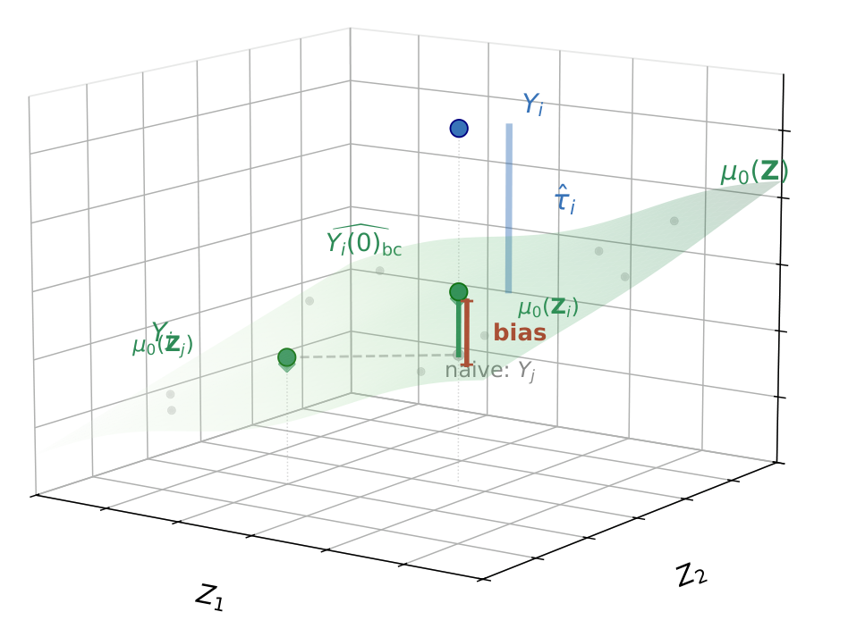
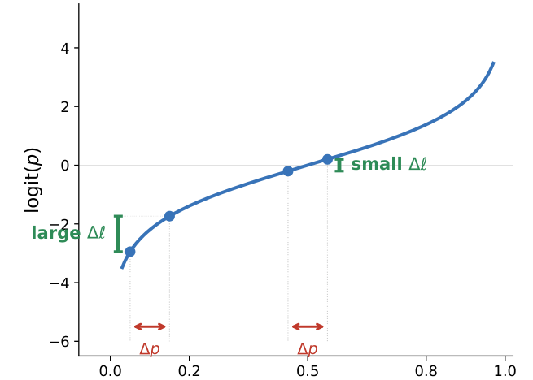
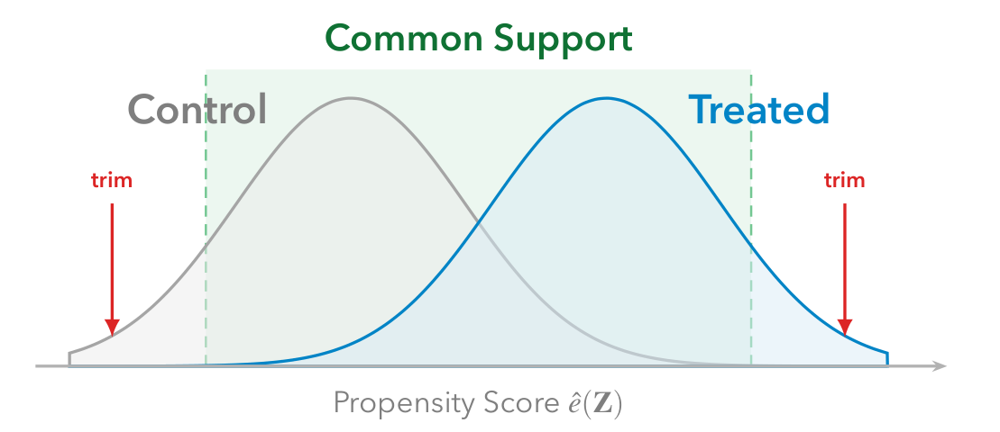
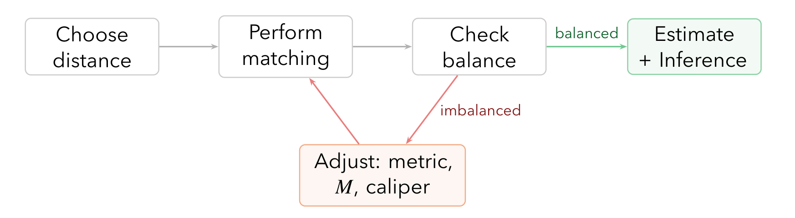
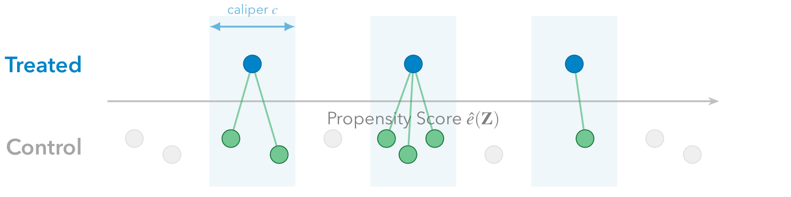
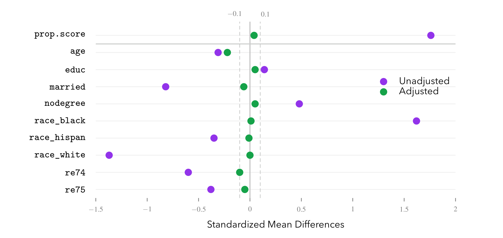
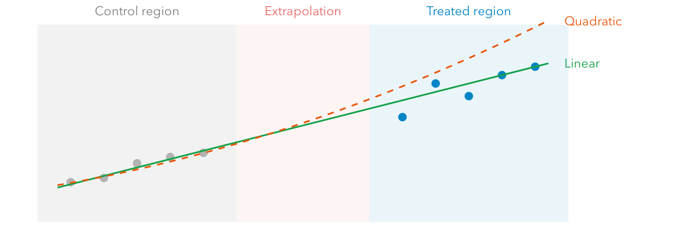

본 포스트는 서울대학교 GSDS Sanghack Lee 교수님의 Causal Inference 강의 자료(11-1강 Matching)를 바탕으로, 강의를 처음 듣는 독자도 논리적 흐름을 따라갈 수 있도록 재구성한 것입니다. 원 슬라이드는 Fan Li, Kosuke Imai, Jingshu Wang 교수님의 강의 자료를 계보로 합니다.
한 줄 요약 (TL;DR)
“매칭은 결과 모형의 함수 형태를 가정하는 대신 닮은 대조군을 직접 찾아 반사실을 채워 넣는 비모수적 대치이며, 그 자체로 추정을 끝내는 도구가 아니라 회귀가 외삽 대신 내삽을 하도록 만들어 주는 전처리 단계다.”
앞 회차의 IPW가 성향 점수로 가중치를 만들어 교란을 지웠다면, 이번 회차는 같은 무시가능성 가정 위에서 짝짓기로 같은 일을 합니다. 회귀는 \(\hat\mu_0(\cdot)\)의 함수 형태를 잘못 잡으면 처치군과 대조군이 겹치지 않는 구간에서 외삽에 의존해 무너지는데, 매칭은 그 함수 형태를 아예 가정하지 않습니다. 대신 대가를 치릅니다 — 최근접 이웃 매칭의 편향은 연속 공변량 개수 \(p\)에 대해 \(O(N^{-1/p})\)로만 줄어들어, \(p\)가 조금만 커져도 차원의 저주에 걸립니다. 이 강의는 그 대가를 세 방향으로 갚습니다. 편향보정 매칭으로 짝이 어긋난 만큼을 회귀로 보정하고, 성향 점수로 \(p\)차원을 1차원으로 압축하며, 마지막으로 매칭을 전처리로 격하시키고 그 위에 회귀를 얹습니다. 다만 성향 점수로 차원을 줄이는 순간 “점수는 같은데 공변량은 정반대”인 짝이 생길 수 있다는 성향 점수 역설이 따라붙으므로, 결론은 언제나 하나입니다 — 점수 균형이 아니라 다변량 공변량 균형을 직접 확인하라.
1. 비모수적 대치로서의 매칭 (Matching as Nonparametric Imputation)
1.1 표기와 설정 (Notation and Setup)
앞 회차들과 같은 무대에서 출발합니다. \(N\)개의 개체가 있고, 각 개체 \(i\)에 대해 다음이 주어집니다.
- \(X_i \in \{0, 1\}\): 처치 지시 변수 (\(X_i = 1\)이면 처치군, \(X_i = 0\)이면 대조군)
- \(Z_i\): 공변량 벡터
- \(Y_i(0), Y_i(1)\): 잠재적 결과(potential outcomes)
- \(N_1 = |\{i : X_i = 1\}|\): 처치군의 크기, \(N_0 = N - N_1\): 대조군의 크기
그리고 앞 회차에서 확립한 두 가정을 그대로 물려받습니다.
무시가능성(ignorability) — 공변량 \(Z\)를 조건부로 하면 처치 배정이 잠재적 결과와 독립입니다. 앞 회차의 비교란성(unconfoundedness)과 같은 내용입니다.
\[ \big(Y(0), Y(1)\big) \perp\!\!\!\perp X \mid Z \]
양의 확률성(positivity) — 어떤 공변량 값에서도 처치를 받을 확률이 0이나 1이 아닙니다.
\[ 0 < P(X = 1 \mid Z) < 1 \]
이번 회차의 초점은 처치군에 대한 평균 처치 효과(Average Treatment Effect for the Treated, ATT) 의 추정입니다. 왜 하필 ATT인지는 §2.5에서 이론적 근거와 함께 밝혀지지만, 직관적으로는 이렇습니다 — 관찰 연구에서 대조군 풀은 처치군보다 훨씬 큰 경우가 많고, 그럴 때 “처치받은 사람들 각각에게 닮은 대조군을 찾아 준다”는 작업이 가장 자연스럽게 성립하기 때문입니다.
1.2 회귀에서 매칭으로 (From Regression to Matching)
무시가능성 아래에서 ATT는 다음과 같이 분해됩니다.
\[ \tau_{\text{ATT}} = \mathbb{E}_{Z \mid X = 1}\Big[\underbrace{\mu_1(Z)}_{\text{관측됨}} - \underbrace{\mu_0(Z)}_{\text{대치해야 함}}\Big], \qquad \mu_t(Z) = \mathbb{E}[Y \mid X = t, Z] \]
여기서 핵심은 비대칭성입니다. 처치군에 대해 \(\mu_1(Z)\)는 실제로 관측된 결과에서 바로 얻을 수 있지만, \(\mu_0(Z)\)는 “처치받은 사람이 처치받지 않았더라면”에 해당하므로 결코 관측되지 않습니다. 인과추론의 모든 어려움이 이 한 항에 응축되어 있고, 추정 방법의 차이는 결국 이 항을 어떻게 채워 넣느냐(impute) 의 차이입니다.
회귀(regression) 는 이를 모형 기반 대치(model-based imputation) 로 해결합니다. \(\mu_0\)를 회귀 모형 \(\hat\mu_0(\cdot)\)으로 추정한 뒤 처치군의 관측 결과에서 빼는 것입니다.
\[ \hat\tau_{\text{reg}} = \frac{1}{N_1}\sum_{i=1}^{N} X_i \big(Y_i - \hat\mu_0(Z_i)\big) \]
- \(N_1 = \sum_i X_i\): 처치군의 크기
- \(\hat\mu_0(Z_i) = \widehat{\mathbb{E}}[Y \mid X = 0, Z = Z_i]\): 공변량 \(Z_i\)를 가진 개체의 비처치 결과 회귀 추정치
- \(X_i\)를 곱하므로 처치군에 대해서만 합산됩니다.
문제는 두 군이 \(Z\) 상에서 크게 다를 때 발생합니다. 처치군이 몰려 있는 영역에 대조군 관측치가 거의 없다면, \(\hat\mu_0(Z_i)\)는 그 영역에서 데이터가 아니라 모형의 함수 형태(선형인가, 이차인가, 상호작용이 있는가)가 만들어 낸 값이 됩니다. 이것이 모형 의존성(model dependence) 이며, §5에서 그림과 함께 본격적으로 다룹니다.
매칭(matching) 은 이 문제를 정면으로 회피합니다. 함수 형태를 가정하는 대신, 공변량이 비슷한 대조군 개체를 직접 찾아 그들의 결과로 \(Y_i(0)\)을 채웁니다. 즉 비모수적 대치(nonparametric imputation) 입니다.
매칭은 회귀와 마찬가지로 여전히 무시가능성 가정을 필요로 합니다. 매칭은 “관측된 교란을 통제”하는 도구이지, 미관측 교란을 해결해 주지 않습니다. 함수 형태 가정에서 자유로워졌다는 것이 식별 가정에서 자유로워졌다는 뜻으로 오해되기 쉬운데, 이 둘은 완전히 별개의 문제입니다.
1.3 매칭의 아이디어 (The Matching Idea)
관찰 연구에서는 처치군에 비해 잠재적 대조군의 풀(reservoir)이 매우 큰 경우가 많습니다. 이 큰 풀 덕분에 각 처치 개체마다 하나 이상의 서로 다른 대조 개체를 매칭시킬 수 있습니다.

1.4 연구 설계 도구로서의 매칭 (Matching as Study Design)
매칭을 단순한 분석 기법으로만 보면 중요한 성질 하나를 놓치게 됩니다. 매칭은 연구 설계(study design) 도구이기도 합니다.
- 많은 관찰 연구에서, 매칭을 수행하는 시점에는 결과 변수가 아직 측정되지 않았습니다.
- 실제 워크플로는 이렇습니다: 처치 개체를 식별한다 \(\rightsquigarrow\) 어떤 대조 개체를 모집하거나 추적할지 선택한다 \(\rightsquigarrow\) 그러고 나서 두 군의 결과를 측정한다.
- 이 순서가 설계 단계(누구와 누구를 비교할 것인가)와 분석 단계(어떻게 추정할 것인가)를 분리합니다.
설계 선택이 결과를 보지 않은 상태에서 이루어진다는 점이 핵심입니다. 결과를 이미 본 뒤에 거리 측도나 캘리퍼를 바꾸면, 그것은 균형을 개선하는 작업이 아니라 원하는 추정치가 나올 때까지 분석을 조정하는 작업이 됩니다. 매칭 단계에서 결과 변수를 아예 쓰지 않는다는 규율이 이 유혹을 구조적으로 차단합니다.
이는 §4에서 볼 “매칭은 반복적 과정”이라는 서술과도 이어집니다. 균형이 맞을 때까지 몇 번이고 다시 매칭해도 좋은 이유는, 그 반복이 결과를 보지 않고 이루어지기 때문입니다.
(Stuart, 2010, Statistical Science, Section 1)
1.5 \(M\)의 편향-분산 트레이드오프 (Bias–Variance Tradeoff in \(M\))
대조군 풀이 크다면, 각 처치 개체를 \(M\)개의 대조 개체에 매칭할 수 있습니다. 이 \(M\)을 얼마로 둘 것인가가 매칭의 첫 번째 튜닝 지점입니다.

- 작은 \(M\) \(\rightsquigarrow\) 가장 가까운 소수만 사용 \(\rightsquigarrow\) 편향 작음, 분산 큼
- 큰 \(M\) \(\rightsquigarrow\) 비교적 먼 이웃까지 포함 \(\rightsquigarrow\) 편향 큼, 분산 작음
이 트레이드오프의 이론적 근거는 Abadie and Imbens (2006)에 있으며, §2.4에서 편향의 차수를 명시적으로 계산해 봅니다.
1.6 매칭 추정량 (The Matching Estimator)
이제 매칭 추정량을 정식으로 정의합니다. 처치 개체 \(i\)에 대해 매칭 집합(matched set) \(M_i\)를 두겠습니다. \(M_i\)는 개체 \(i\)와 유사한 공변량을 공유하는 대조 개체들의 인덱스 집합입니다.
\[ \hat\tau_{\text{match}} = \frac{1}{N_1}\sum_{i=1}^{N} X_i \Big(Y_i - \underbrace{\frac{1}{|M_i|}\sum_{j\in M_i} Y_j}_{\widehat{Y_i(0)}}\Big) \]
- \(Y_i\): 처치 개체의 관측 결과 = \(Y_i(1)\)
- \(\dfrac{1}{|M_i|}\sum_{j\in M_i} Y_j\): 매칭된 대조 개체들의 결과 평균으로 추정한 \(Y_i(0)\)의 비모수적 대치값
§1.2의 회귀 추정량 \(\hat\tau_{\text{reg}}\)와 나란히 놓고 보면 차이가 선명합니다. \(\hat\mu_0(Z_i)\) 자리에 모형 대신 “닮은 이웃들의 평균”이 들어간 것이 전부입니다. 매칭이 비모수적이라는 말의 정확한 의미가 여기에 있습니다.
매칭은 다양한 방식으로 수행될 수 있습니다.
- 1:1 매칭 vs 1:다(one-to-many) 매칭
- 복원(with replacement) vs 비복원(without replacement) 매칭
이 선택지들은 §4에서 워크플로와 함께 정리합니다.
1.7 정확 매칭과 CEM (Exact Matching and CEM)
매칭의 목표를 한마디로 요약하면 공변량 균형(covariate balance) 의 달성입니다. 처치군과 대조군에서 공변량 \(Z\)의 분포가 같아지면, \(Z\)로 인한 편향이 제거되기 때문입니다. 가장 이상적인 형태는 정확 매칭(exact matching) 입니다.
각 처치 개체 \(i\)에 대해 \(Z_j = Z_i\)인 대조 개체 \(j\)를 찾는 것으로, 성립하기만 하면 다음이 보장됩니다.
\[ F_e(Z \mid X = 1) = F_e(Z \mid X = 0) \]
여기서 \(F_e(\cdot)\)는 공변량의 경험적 분포함수입니다. 매칭된 두 군에서 이 분포가 완벽히 같아지므로 \(Z\)의 차이로 인한 편향이 완전히 제거되고, 어떤 함수 형태도 가정하지 않으므로 모형 의존성도 사라집니다.
문제는 실현 가능성입니다. 공변량의 차원이 조금만 커지거나 연속형 공변량이 하나라도 있으면 정확히 같은 값을 가진 대조 개체를 찾을 확률이 0으로 수렴합니다.
조대화 정확 매칭(Coarsened Exact Matching, CEM; Iacus, King, and Porro, 2012) 은 이 비실현성을 완화하는 절충안입니다.
- 공변량을 이산적인 구간(bin)으로 조대화(coarsen) 한 뒤, 같은 구간에 속하면 매칭으로 인정합니다 (예: 연령을 10세 단위로 묶기).
- 이렇게 만든 이산 범주가 실질적인 의미(substantive meaning) 를 가질 수 있다는 점도 장점입니다 (예: ‘청년/중년/노년’).
- 다만 여전히 일부 처치 개체는 같은 구간에 짝지을 대조 개체가 없을 수 있습니다 \(\rightsquigarrow\) 중첩 부족(lack of overlap) 문제. 이 문제는 §3.4의 공통 지지에서 다시 등장합니다.
2. 최근접 이웃 매칭과 그 이론 (Nearest Neighbor Matching and Its Theory)
연속형·고차원 공변량에서 정확 매칭이 불가능하므로, 실무에서는 거리(distance) 를 정의해 “가장 가까운” 이웃을 찾습니다.
2.1 정의 (Definition)
거리 측도로 노름 \(\|\cdot\|\)을 사용한다고 합시다. 개체 \(i\)에 대해 가장 가까운 \(M\)개의 매칭 인덱스 집합을 \(M_i\)라 하면, 잠재적 결과의 대치값은 다음과 같이 정의됩니다.
\[ \hat Y_i(t) = \begin{cases} \dfrac{1}{M}\displaystyle\sum_{j\in M_i} Y_j, & X_i = 1 - t \\[10pt] Y_i, & X_i = t \end{cases} \qquad t \in \{0, 1\} \]
- 자기 자신의 처치 상태(\(X_i = t\)) 에 해당하는 결과는 관측값 \(Y_i\)를 그대로 사용합니다.
- 반대 처치 상태(\(X_i = 1 - t\)) 에 해당하는 결과만 \(M\)개의 최근접 이웃 평균으로 대치합니다.
- 예: 개체 \(i\)가 처치군(\(X_i = 1\))이라면 \(\hat Y_i(1) = Y_i\)이고, \(\hat Y_i(0)\)은 \(M\)개의 가장 가까운 대조 개체 결과의 평균이 됩니다.
이로부터 ATT 추정량이 곧바로 따라 나옵니다.
\[ \hat\tau_{\text{ATT}} = \frac{1}{N_1}\sum_{i=1}^{N} X_i \big(Y_i - \hat Y_i(0)\big) \]
2.2 알고리즘 (Algorithms)
비복원(without replacement) 매칭에서는 한 번 사용된 대조 개체를 다시 쓸 수 없으므로, 어떤 순서로 누구를 먼저 매칭하느냐가 결과에 영향을 줍니다. 두 가지 표준적 접근이 있습니다.
① 탐욕 알고리즘(Greedy algorithm)
- 처치 개체들의 순서를 먼저 정의합니다 (예: 짝짓기 어려운 개체부터).
- 순서대로, 각 처치 개체에 거리가 가장 짧은 \(M\)개의 대조 개체를 매칭하고 따로 빼낸(set aside) 뒤, 다음 처치 개체로 넘어갑니다.
② 최적 매칭(Optimal matching)
- 처치군(\(N_1\)) × 대조군(\(N_0\))의 쌍별 거리 행렬(pairwise distance matrix) \(D\)를 구성합니다.
- \(D\)에서 각 행에 정확히 \(M\)개, 각 열에 최대 하나의 원소만 선택하되, 선택된 쌍별 거리의 총합이 최소가 되도록 합니다.
- 이 최적화는 헝가리안 알고리즘(Hungarian algorithm) 으로 다항 시간(polynomial time)에 풀 수 있습니다.
탐욕 알고리즘이 “당장 가까운 것부터” 고른다면, 최적 매칭은 “전체 거리 합을 최소화”합니다.
2.3 탐욕 매칭: 순서가 왜 중요한가 (Greedy Matching: Why Order Matters)
탐욕 알고리즘에서 “짝짓기 어려운 개체를 먼저”라는 지침이 왜 나오는지는 작은 예시 하나로 분명해집니다.

실무에서는 추정 성향 점수 \(\hat e(Z_i)\)가 내림차순이 되도록 처치 개체를 정렬하는 방법이 흔히 쓰입니다. 성향 점수가 높은 개체는 그만큼 대조군에서 닮은 상대를 찾기 어려운 극단적 개체이므로, 이들에게 먼저 선택권을 주는 셈입니다.
2.4 매칭에서의 차원의 저주 (The Curse of Dimensionality in Matching)
매칭의 편향은 결국 짝이 얼마나 어긋났는가에서 옵니다. 이를 정량화해 보겠습니다.
1단계 — 최근접 이웃 거리의 차수. 1차원에서 \(N\)개의 균등한 점들의 간격은 \(\sim 1/N\)입니다. \(p\)차원에서는 같은 \(N\)개의 점이 각 축마다 \(N^{1/p}\)개씩만 배치되므로, 최근접 이웃까지의 거리는 다음 차수가 됩니다.
\[ \|Z_i - Z_j\| = O\big(N^{-1/p}\big) \]
2단계 — 거리를 편향으로 옮기기. \(\mu_0(Z)\)가 립시츠 연속(Lipschitz continuous), 즉 입력이 조금 변하면 출력도 그에 비례해서만 변한다고 가정합니다 (상수 \(L\)에 대해 \(|\mu_0(a) - \mu_0(b)| \le L \|a - b\|\)). 그러면 짝이 어긋나서 생기는 편향이 바로 위 거리에 묶입니다.
\[ \underbrace{\big|\mu_0(Z_i) - \mu_0(Z_j)\big|}_{\text{짝 어긋남에서 오는 편향}} \;\le\; L \cdot \|Z_i - Z_j\| = O\big(N^{-1/p}\big) \]
3단계 — 숫자로 확인하기. \(N = 10{,}000\)일 때 \(N^{-1/p}\)가 \(p\)에 따라 어떻게 변하는지 보면 문제가 한눈에 들어옵니다.
| \(p\) | 1 | 5 | 10 | 20 |
|---|---|---|---|---|
| \(N^{-1/p}\) (\(N = 10{,}000\)) | 0.0001 | 0.16 | 0.40 | 0.63 |
\(p = 1\)에서는 편향이 사실상 0인데, 연속 공변량이 20개만 되어도 최근접 이웃까지의 거리가 0.63으로 뛰어오릅니다. 표본을 아무리 늘려도 이 수렴 속도는 \(N^{-1/20}\)이라 개선이 거의 없습니다 — 편향을 절반으로 줄이려면 표본을 \(2^{20} \approx 100\)만 배 늘려야 합니다.
이것이 차원 축소가 선택이 아니라 필수인 이유이며, §3의 성향 점수 매칭이 등장하는 직접적 동기입니다.
(Abadie and Imbens, 2006, Econometrica, Theorem 1)
2.5 ATT 매칭의 독립성과 일치성 (Independence and Consistency)
그렇다면 매칭 추정량은 언제 잘 작동할까요? 고정된 \(M\)과 복원 매칭을 쓸 때, ATT 추정에 한해서는 좋은 성질이 성립합니다.
- ATT를 위해서는 각 처치 개체에 대해 \(\hat Y_i(0)\)만 대치하면 됩니다.
- 이때 각 처치 개체는 정확히 한 번씩만 등장합니다 (자신의 효과를 추정받는 주체로서 한 번). 따라서 대치된 반사실 \(\hat Y_i(0)\)들이 처치 개체들 사이에서 독립입니다.
- 독립성 + 대수의 법칙 \(\rightsquigarrow\) ATT에 대해 \(\sqrt{N}\)-일치성(\(\sqrt{N}\)-consistent)이 성립합니다.
매칭이 ATT 추정에 가장 자연스러운 이유가 여기에 있습니다. ATE로 넘어가면 대조군의 \(\hat Y_i(1)\)도 대치해야 하는데, 그 순간 각 개체가 자기 효과를 추정받는 주체이면서 동시에 남의 반사실을 채워 주는 매칭 상대라는 이중 역할을 맡게 되어 군 사이에 의존성이 생깁니다. 그 결과 \(\sqrt{N}\)-일치성이 깨집니다. 자세한 논의는 §6.1에 정리했습니다.
(Abadie and Imbens, 2006, Econometrica, Theorems 1–4)
2.6 수치 예제 (A Toy Example)
지금까지의 정의를 아주 작은 데이터에 직접 적용해 보겠습니다. \(N_1 = 3\)명의 처치군, \(N_0 = 6\)명의 대조군, \(p = 2\)개의 공변량, \(M = 1\)인 상황입니다.
| 처치군 | \(Z_1\) | \(Z_2\) | \(Y\) |
|---|---|---|---|
| \(i = 1\) | 3 | 5 | 8 |
| \(i = 2\) | 6 | 2 | 12 |
| \(i = 3\) | 7 | 7 | 10 |
| 대조군 | \(Z_1\) | \(Z_2\) | \(Y\) |
|---|---|---|---|
| \(j = 1\) | 1 | 2 | 2 |
| \(j = 2\) | 2 | 6 | 4 |
| \(j = 3\) | 4 | 1 | 6 |
| \(j = 4\) | 3 | 4 | 5 |
| \(j = 5\) | 5 | 3 | 7 |
| \(j = 6\) | 8 | 6 | 9 |
유클리드 거리로 최근접 이웃을 찾으면 다음과 같습니다.
- \(i = 1\) \((3, 5)\) \(\rightarrow\) \(j = 4\) \((3, 4)\), 거리 \(= 1\)
- \(i = 2\) \((6, 2)\) \(\rightarrow\) \(j = 5\) \((5, 3)\), 거리 \(= \sqrt{2}\)
- \(i = 3\) \((7, 7)\) \(\rightarrow\) \(j = 6\) \((8, 6)\), 거리 \(= \sqrt{2}\)
\(M = 1\)이므로 \(\hat Y_i(0)\)은 매칭된 대조 개체의 결과 그 자체입니다.
\[ \hat\tau_{\text{ATT}} = \frac{1}{3}\big[(8 - 5) + (12 - 7) + (10 - 9)\big] = \frac{9}{3} = 3.0 \]
여기서 반드시 짚고 넘어가야 할 점이 있습니다. 매칭이 완벽하지 않다는 것입니다. \(i = 2\)와 \(j = 5\)는 거리가 \(\sqrt{2} \neq 0\)이므로 공변량이 정확히 같지 않고, \(Y_5 = 7\)은 \(\mu_0(Z_5)\)의 근사이지 우리가 원하는 \(\mu_0(Z_2)\)의 근사가 아닙니다. 이 어긋남이 그대로 편향이 됩니다. 다음 절이 바로 이 어긋남을 보정하는 방법입니다.
2.7 편향보정 매칭 (Bias-Corrected Matching)
문제를 다시 정확히 진술하면 이렇습니다. 최근접 이웃 매칭은 \(Y_j\)로 \(Y_i(0)\)을 추정하지만, \(Y_j\)가 근사하는 것은 \(\mu_0(Z_j)\)이지 \(\mu_0(Z_i)\)가 아닙니다. 두 값의 차이만큼 체계적 편향이 발생합니다.
아이디어: 짝이 어긋난 만큼을 회귀로 예측해 각 대조 개체의 결과를 보정해 주자.
\[ \hat\tau_{\text{bc}} = \frac{1}{N_1}\sum_{i : X_i = 1}\left(Y_i - \frac{1}{M}\sum_{j \in M_i}\Big[Y_j + \underbrace{\hat\mu_0(Z_i) - \hat\mu_0(Z_j)}_{\text{어긋남 보정항}}\Big]\right) \]
여기서 \(\hat\mu_0(Z)\)는 \(\mathbb{E}[Y \mid Z, X = 0]\)에 대한 회귀 적합입니다. 보정항 \(\hat\mu_0(Z_i) - \hat\mu_0(Z_j)\)는 “\(Z_j\)에서 \(Z_i\)로 옮겨 갈 때 결과가 얼마나 변할 것으로 예상되는가”를 뜻하며, 딱 그만큼 \(Y_j\)를 밀어 줍니다.

이 편향보정은 R 패키지 MatchIt과 Matching에서 기본값으로 채택되어 있을 만큼 표준적인 처리입니다 (Abadie and Imbens, 2011).
2.8 매칭 후 추론 (Inference after Matching)
점 추정만큼 중요한 것이 분산 추정입니다. Abadie and Imbens (2006)는 ATT에 대한 분산 추정량을 다음과 같이 제시했습니다.
\[ \widehat{\operatorname{Var}}(\hat\tau_{\text{ATT}}) = \frac{1}{N_1^2}\sum_{i=1}^{N}\big(1 + K_M(i)\big)^2 \hat\sigma_i^2 \]
- \(K_M(i)\): 개체 \(i\)가 다른 개체의 매칭 상대로 사용된 횟수
- \(\hat\sigma_i^2\): \(\operatorname{Var}(Y_i \mid Z_i, X_i)\)의 추정치
핵심은 \((1 + K_M(i))^2\) 항입니다. 자주 매칭 상대로 불려 나온 개체는 여러 처치 개체의 대치값에 동시에 기여하므로 그 개체의 잡음이 추정량 전체로 증폭됩니다. 이는 IPW에서 극단적 가중치가 분산을 부풀리는 현상과 정확히 같은 구조이며, 복원 매칭의 위험(§4.6)을 정량적으로 설명해 줍니다.
직관적으로는 “분산 공식이 복잡하니 부트스트랩을 쓰면 되지 않나” 싶지만, 최근접 이웃 매칭 추정량에 대해 부트스트랩은 타당하지 않습니다.
부트스트랩이 작동하려면 데이터가 조금 바뀔 때 추정치도 조금만 바뀌어야 합니다. 그런데 매칭에서는 어느 개체가 매칭 상대로 선택되는가가 데이터의 불연속 함수입니다 — 재표집으로 개체 하나가 빠지는 순간 매칭 상대가 통째로 다른 개체로 바뀔 수 있습니다. 이 불연속성이 부트스트랩의 전제를 깹니다.
(Abadie and Imbens, 2008, Econometrica)
2.9 커널 매칭 (Kernel Matching)
최근접 이웃 매칭이 가장 가까운 \(M\)개에만 가중치 \(1/M\)을 동등하게 주는 반면, 커널 매칭(kernel matching) 은 대역폭(bandwidth) \(h\) 안의 모든 대조 개체에 양의 가중치를 부여하되 더 가까울수록 더 높은 가중치를 줍니다.
커널 함수 \(K(\cdot)\)가 주어졌을 때 (예: 가우시안 커널 \(K(u) = e^{-u^2/2}\)), 처치 개체 \(i\)에 대한 대조 개체 \(j\)의 가중치는 다음과 같습니다.
\[ w_i(j) = \frac{K\!\left(\dfrac{\|Z_j - Z_i\|}{h}\right)}{\displaystyle\sum_{k \,:\, X_k = 0} K\!\left(\dfrac{\|Z_k - Z_i\|}{h}\right)} \]
- 분자: 개체 \(i\)와 \(j\)의 거리에 커널을 적용한 값.
- 분모: 모든 대조 개체에 대한 커널 값의 합으로, 가중치가 1로 정규화되도록 합니다 (\(\sum_j w_i(j) = 1\)).
- \(h\)가 작을수록 가까운 이웃에 가중치가 집중되고, 클수록 더 많은 대조 개체가 부드럽게 반영됩니다. 즉 \(h\)가 \(M\)과 같은 역할의 편향-분산 손잡이입니다.
이를 이용한 추정량은 §1.6의 일반화입니다.
\[ \hat\tau_{\text{kernel}} = \frac{1}{N_1}\sum_{i=1}^{N} X_i \Big(Y_i - \sum_{j \,:\, X_j = 0} w_i(j)\, Y_j\Big) \]
매칭 집합의 단순 평균 \(\frac{1}{|M_i|}\sum_{j \in M_i} Y_j\) 자리에 커널 가중 평균이 들어간 형태로, 매칭 상대를 이산적으로 ’선택’하는 대신 거리에 따라 연속적으로 ’가중’합니다.
다만 커널 매칭도 차원의 저주에서 자유롭지 않습니다. \(p\)가 크면 대역폭 \(h\) 안에 들어오는 대조 개체 자체가 사라지므로, §2.4의 문제가 그대로 재현됩니다. 이 역시 성향 점수 매칭의 동기가 됩니다.
3. 성향 점수 매칭 (Propensity Score Matching)
3.1 차원 축소 (Dimension Reduction)
§2.4에서 최근접 이웃 매칭의 편향이 \(O(N^{-1/p})\)임을 보았습니다. 공변량이 많아지면 매칭은 이론적으로만 어려운 것이 아니라 실무적으로도 곧바로 무너집니다. 이진 공변량이 20개만 있어도 가능한 공변량 패턴은 \(2^{20} \approx 10^6\)개, 약 100만 개에 달합니다. 이 정도면 같은 패턴을 가진 처치-대조 쌍을 찾는 직접 매칭(direct matching)은 사실상 불가능합니다.
해결책은 고차원 공변량 벡터 \(Z_i\)를 성향 점수(propensity score) 라는 단일 스칼라로 대체하는 것입니다.
\[ e(Z) = P(X = 1 \mid Z) \]
앞 회차에서 확인한 균형 점수(balancing score) 성질이 이 대체를 정당화합니다.
\[ \big(Y(0), Y(1)\big) \perp\!\!\!\perp X \mid Z \;\Longrightarrow\; \big(Y(0), Y(1)\big) \perp\!\!\!\perp X \mid e(Z) \]
즉 \(Z\) 전체를 맞출 필요 없이 이 하나의 값만 맞춰도 무시가능성이 유지됩니다. \(p\)차원 문제가 1차원 문제로 줄어드는 셈입니다.
3.2 성향 점수 거리 (PS Distance)
추정 성향 점수 \(\hat e(Z)\)를 이용한 거리 정의는 두 가지가 흔히 쓰입니다.
(1) 성향 점수 차이의 절댓값
\[ d(Z_i, Z_j) = \big|\hat e(Z_i) - \hat e(Z_j)\big| \]
(2) 로짓(logit) 차이 — 이쪽이 선호됩니다
\[ d(Z_i, Z_j) = \big|\operatorname{logit}\big(\hat e(Z_i)\big) - \operatorname{logit}\big(\hat e(Z_j)\big)\big|, \qquad \operatorname{logit}(p) = \ln\frac{p}{1 - p} \]

3.3 성향 점수 모형 설정: 적합이 아니라 균형 (Balance, Not Fit)
여기서 초보자가 가장 많이 오해하는 지점을 짚고 갑니다. 성향 점수는 보통 로지스틱 회귀로 추정하지만, GBM이나 랜덤 포레스트를 써도 됩니다. 그런데 어떤 모형을 쓰든 평가 기준이 예측 정확도가 아닙니다.
이 한 문장에서 일반적인 예측 모형링과 다른 여러 결론이 파생됩니다.
- 다중공선성(collinearity)은 문제가 되지 않습니다. 계수를 해석할 것이 아니기 때문입니다.
- 특정 표본에 과적합(overfitting)하는 것이 오히려 도움이 될 수 있습니다. 우리가 원하는 것은 이 표본 안에서의 균형이지, 새 표본에 대한 일반화가 아닙니다. 다소 반직관적인 이 주장의 근거는 §6.2–6.4에 정리했습니다.
- 따라서 AUC나 분류 정확도로 성향 점수 모형을 고르지 않습니다.
실무적으로는 반복적 설정(iterative specification) 을 씁니다.
- 모형을 적합해 성향 점수를 추정하고 매칭한다.
- 공변량뿐 아니라 그 제곱항과 상호작용항에 대해서까지 균형을 점검한다.
- 불균형한 항이 있으면 그 항을 성향 점수 모형에 추가하고 다시 추정한다.
공변량에 결측이 있는 경우에는 대치(impute)한 값과 함께 결측 여부 지시변수(missingness indicator)를 성향 점수 모형에 넣습니다. 결측 자체가 처치 배정과 관련된 정보를 담고 있을 수 있기 때문입니다.
(Stuart, 2010, Statistical Science; Rosenbaum and Rubin, 1984)
3.4 공통 지지 (Common Support)
매칭이 성립하려면 공통 지지(common support) 가 필요합니다. 각 처치 개체에 대해 공변량이 비슷한 대조 개체가 실제로 존재해야 한다는 조건으로, 앞 회차의 양의 확률성 가정이 유한 표본에서 취하는 구체적 형태입니다.

중첩 영역 바깥의 개체들은 좋은 매칭 상대가 없으므로 잘라 내야(trim) 합니다. 이는 데이터를 버리는 손실이지만, 억지로 남겨 두면 §5.1에서 볼 외삽 문제를 그대로 떠안게 됩니다.
3.5 성향 점수 매칭의 주의사항 (Caveats)
성향 점수 매칭에는 흥미로운 결과 두 가지가 얽혀 있습니다.
① 추정된 성향 점수가 참 성향 점수보다 나을 수 있다 (Abadie and Imbens, 2016). 직관과 어긋나지만, 추정 잡음이 표본에 적응(adapt)하면서 매칭된 개체들이 공변량 공간에서 실제로 더 가까워지는 효과가 있습니다. 단, 모형이 올바르게 설정되었다는 전제에 의존합니다.
② 성향 점수 역설 (King and Nielsen, 2019). 캘리퍼를 좁혀 성향 점수 균형을 개선했는데 공변량 균형은 오히려 나빠질 수 있습니다. 성향 점수가 \(p\)차원을 1차원으로 압축하기 때문에, \(\hat e(Z)\)는 비슷한데 \(Z\) 자체는 전혀 다른 짝이 생길 수 있기 때문입니다.
두 결과의 자세한 메커니즘은 §6.2–6.4에 정리했습니다. 실무적 결론은 하나로 수렴합니다.
성향 점수는 차원 축소를 위한 도구이지 균형 점검을 대신해 주는 물건이 아닙니다. 매칭 후에는 반드시 개별 공변량 각각에 대해 균형을 확인해야 합니다 (§4.7).
4. 실무적 매칭 (Practical Matching)
4.1 매칭 워크플로 (The Matching Workflow)
지금까지의 조각들을 하나의 절차로 엮으면 다음과 같습니다.

- 매칭은 반복적(iterative) 과정입니다: 매칭하고, 균형을 점검하고, 조정합니다.
- 매칭 이후에는 매칭된 표본 위에서 회귀나 가중을 추가로 적용해 잔여 불균형(residual imbalance) 을 보정할 수 있습니다 (§5.2).
4.2 설계 선택 개관 (Design Choices)
매칭은 정해진 단일 절차가 아니라 수많은 선택의 조합입니다.
- 어떤 공변량 \(Z\)를 포함할 것인가 — 앞 회차의 조정 기준(adjustment criterion)을 따르며, 후처치 변수(post-treatment variable)는 절대 포함하지 않습니다.
- 거리 측도(distance metric) — 마할라노비스 거리, 성향 점수, 또는 둘의 혼합
- 매칭 개수 \(M\) — 고정할 것인가, 캘리퍼 기반으로 가변화할 것인가
- 작은 \(M\) \(\rightsquigarrow\) 편향 작음, 분산 큼
- 큰 \(M\) \(\rightsquigarrow\) 편향 큼, 분산 작음
- 처치/대조 비율 — 대조군이 훨씬 클 때는 1:다 매칭이 자연스럽습니다.
- 복원 여부 — 복원할 것인가, 비복원할 것인가
4.3 거리 측도: 성향 점수 vs 마할라노비스 (PS vs. Mahalanobis)
마할라노비스 거리(Mahalanobis distance, 1936) 는 공변량의 척도와 상관을 함께 고려하는 거리입니다. 같은 분포에서 나온 두 벡터 \(x, y\)가 공분산 행렬 \(S\)를 가질 때,
\[ d(x, y) = \sqrt{(x - y)' S^{-1} (x - y)} \]
로 정의되며, 여기서 \(S\)는 보통 처치군의 표본 공분산 행렬이나 두 군을 합친 공분산 행렬을 씁니다.
- 핵심 아이디어: \(S^{-1}\)을 끼워 넣어 공변량의 척도(scale)와 상관(correlation)을 정규화합니다. 단위가 다른 변수들이나 서로 상관된 변수들을 공정하게 비교할 수 있게 됩니다.
이 거리는 두 가지 특수 경우로 환원됩니다.
- \(S = I_p\)(단위 행렬)이면 \(\rightarrow\) 유클리드 거리(Euclidean distance) \[ d(x, y) = \sqrt{\sum_{i=1}^{p}(x_i - y_i)^2} \]
- \(S\)가 대각 행렬이면 \(\rightarrow\) 표준화된 유클리드 거리(normalized Euclidean distance) \[ d(x, y) = \sqrt{\sum_{i=1}^{p}\frac{(x_i - y_i)^2}{s_i^2}} \] 여기서 \(s_i\)는 \(x_i\)의 표준편차로, 각 차원을 표준편차로 나누어 척도를 맞춥니다.
그렇다면 언제 어느 쪽을 쓸까요?
| 상황 | 권장 거리 | 이유 |
|---|---|---|
| 연속 공변량이 적을 때 (\(p \le 5\text{–}8\)) | 마할라노비스 거리 | 모든 공변량에 대해 직접 매칭하므로 정보 손실이 없습니다 |
| 공변량이 많거나 처치 모형이 복잡할 때 | 성향 점수 거리 | 효과적인 차원 축소를 제공합니다 |
| 실무에서 흔한 절충 | 성향 점수 + 캘리퍼, 그 안에서 마할라노비스 | 캘리퍼로 후보를 좁힌 뒤 다변량 거리로 정밀하게 고릅니다 |
세 번째 행이 §3.5의 성향 점수 역설에 대한 실무적 대응이기도 합니다. 성향 점수로 1차원 압축을 하되, 최종 선택은 다변량 거리로 하는 것입니다.
4.4 캘리퍼 매칭 (Caliper Matching)
캘리퍼 폭(caliper width) \(c\)를 정하고, 처치 개체로부터 거리가 \(c\) 미만인 대조 개체만 매칭 후보로 인정하는 방법입니다.

- 매칭 개수 \(M\)이 처치 개체마다 달라집니다. 위 그림에서는 \(M_1 = 2\), \(M_2 = 3\), \(M_3 = 1\)입니다.
- 표본 크기가 커질수록 캘리퍼 안에 들어오는 개체가 늘어나므로 \(M\)도 함께 증가하는 경향이 있습니다.
- 널리 쓰이는 선택은 \(c = 0.2 \times \operatorname{SD}\big(\operatorname{logit}(\hat e(Z))\big)\)입니다 (Austin, 2011). 이론적 최적값이라기보다 시뮬레이션에 근거한 경험 법칙입니다.
4.5 완전 매칭 (Full Matching)
표준적인 매칭은 짝지어지지 못한 대조 개체를 버리는데, 이는 정보 손실입니다. 완전 매칭(full matching; Rosenbaum, 1991; Hansen, 2004) 은 이를 개선합니다.
- 모든 개체를 어떤 매칭 집합에든 배치합니다.
- 비율이 가변적입니다 — 어떤 집합은 처치 1명에 대조 \(k\)명(1:\(k\)), 다른 집합은 처치 \(k\)명에 대조 1명(\(k\):1)이 됩니다.
- 집합 내부 거리의 총합을 최소화하도록 최적화하며, 소프트웨어가 효율적으로 풀어 줍니다.
- 중첩 영역 안의 대조 개체를 최대한 활용하고, 결과적으로 가중 표본(weighted sample) 을 만들어 냅니다.
각 매칭 집합의 크기가 제각각이므로, 개체마다 서로 다른 가중치를 갖게 됩니다. 이 점에서 완전 매칭은 “짝짓기”라는 매칭의 형식을 유지하면서도 실질적으로는 가중 추정량에 가까워집니다 — 앞 회차의 IPW와 이번 회차의 매칭을 잇는 다리인 셈입니다.
실무에서는 지나치게 먼 개체를 배제하기 위해 캘리퍼와 함께 쓰는 경우가 많습니다. R에서는 MatchIt의 method = "full"로 사용할 수 있습니다.
4.6 복원 vs 비복원 (With vs. Without Replacement)
복원 매칭(with replacement)
- 장점: 계산이 더 쉽고, 처치 개체의 처리 순서에 의존하지 않습니다(not order-dependent).
- 단점: 일부 개체, 특히 극단적 성향 점수를 가진 개체가 여러 번 매칭 상대로 불려 나와 추정치에 과도한 영향을 줍니다. §2.8의 분산 공식에서 \(K_M(i)\)가 커지는 상황이며, IPW의 극단적 가중치 문제와 같은 구조입니다.
비복원 매칭(without replacement)
- 장점: 한 개체가 반복 사용되는 것을 원천적으로 막습니다.
- 단점: 처리 순서에 의존하므로 탐욕이냐 최적이냐의 선택이 실제로 결과를 바꿉니다 (§2.3).
R 소프트웨어로는 MatchIt (Ho et al.)과 Matching (Sekhon)이 표준적으로 쓰입니다.
4.7 공변량 균형 점검 (Checking Covariate Balance)
매칭을 했으면 실제로 공변량 균형이 달성되었는지 반드시 진단해야 합니다.
① 표준화 평균 차이 (Standardized Mean Difference, SMD)
\(k\)번째 공변량에 대한 SMD는 다음과 같이 정의됩니다.
\[ \text{SMD}_k = \frac{1}{s_t} \cdot \frac{1}{N_1}\sum_{i=1}^{N} X_i\left(Z_{ik} - \frac{1}{|M_i|}\sum_{j\in M_i} Z_{jk}\right) \]
- 괄호 안: 처치 개체 \(i\)의 공변량 \(Z_{ik}\)와 그에 매칭된 대조 개체들의 평균 공변량의 차이.
- \(s_t\): 매칭 이전 처치군에서 계산한 공변량 \(k\)의 표준편차. 분모를 매칭 전 값으로 고정해야 매칭 전후의 SMD를 같은 척도에서 비교할 수 있습니다.
- 이 값이 0에 가까울수록 균형이 잘 맞은 것이며, 흔히 절댓값 0.1을 기준으로 삼습니다.
② 분포 비교 — 경험적 CDF와 콜모고로프-스미르노프 통계량
평균만 맞아서는 부족합니다. 분포 전체가 같은지도 봐야 합니다. 대조군의 경험적 누적분포함수(ECDF)는
\[ \hat F_0(z) = \frac{1}{N_0}\sum_{i \,:\, X_i = 0} \mathbf{1}_{\{Z_i \le z\}} \]
이고 처치군의 \(\hat F_1(z)\)도 같은 방식으로 정의됩니다. 두 분포의 차이는 콜모고로프-스미르노프(Kolmogorov–Smirnov) 통계량, 즉 두 ECDF 간 최대 수직 거리 \(\sup_z |\hat F_1(z) - \hat F_0(z)|\)로 요약합니다.
균형 검정 결과를 p-value로 보고하는 것은 흔하지만 잘못된 관행입니다.
- p-value는 균형의 변화와 표본 크기의 변화를 뒤섞습니다. 매칭은 표본을 줄이므로, 균형이 전혀 개선되지 않아도 검정력이 떨어져 p-value가 커집니다 — 균형이 좋아진 것처럼 보이는 착시가 생깁니다.
- 더 근본적으로, 균형은 표본 내(in-sample) 성질입니다. 우리가 알고 싶은 것은 “이 매칭된 표본에서 공변량이 실제로 맞았는가”이지 “모집단에서 두 분포가 같다는 귀무가설을 기각할 수 있는가”가 아닙니다.
따라서 SMD나 KS 통계량의 크기 자체를 보고, p-value는 보지 않습니다. (Ho, Imai, King, and Stuart, 2007)
4.8 러브 플롯 (Love Plot)
균형 진단 결과를 시각화하는 표준 도구가 러브 플롯(Love plot) 입니다.

이 그림에 쓰인 데이터가 곧 §5.3에서 다룰 LaLonde 벤치마크입니다.
5. 모형 의존성과 실증적 증거 (Model Dependence and Empirical Evidence)
5.1 외삽 문제 (The Extrapolation Problem)
§1.2에서 미뤄 둔 모형 의존성 문제를 이제 정면으로 다룹니다.

- 처치군과 대조군이 공변량 상에서 다르면, 회귀는 데이터가 희박한 영역으로 외삽(extrapolate) 할 수밖에 없습니다.
- 서로 다른 모형 설정이 외삽 구간에서 매우 다른 추정치를 냅니다.
- 모형 의존성은 데이터가 희박한 곳에서 가장 커집니다.
5.2 전처리로서의 매칭 (Matching as Preprocessing)
여기서 매칭의 진짜 역할이 드러납니다.
- 매칭 이후에는 두 군의 공변량 분포가 겹치므로, 회귀가 외삽이 아니라 내삽(interpolation) 을 하게 됩니다.
- 그 결과 서로 다른 모형 설정이 비슷한 추정치를 냅니다.
- 워크플로: ① 균형을 위해 매칭한다 \(\rightarrow\) ② 매칭된 표본 위에서 회귀하거나 가중한다 \(\rightarrow\) ③ 추정치가 모형 선택에 강건해진다.
매칭의 핵심 가치는 그 자체로 최종 추정치를 준다는 데 있지 않습니다. 추정을 모형 가정에 덜 민감하게 만들어 주는 환경을 조성한다는 데 있습니다.
실증적으로도, 일단 합리적인 균형을 갖춘 매칭 표본이 확보되면 그 위에 어떤 추가 방법을 쓰든 점 추정치는 대체로 비슷하게 나옵니다. 고차원 상황에서는 매칭(또는 층화·가중)과 회귀를 결합하는 것이 정석이며, 이는 앞 회차의 이중 강건(doubly robust) 정신과도 통합니다.
(Ho, Imai, King, and Stuart, 2007, Political Analysis)
5.3 사례연구: LaLonde 벤치마크 (Case Study: The LaLonde Benchmark)
매칭 방법론이 실제로 통하는지를 검증한 가장 유명한 시험대입니다.
- National Supported Work (NSW) 는 무작위 배정된 직업훈련 프로그램입니다 (LaLonde, 1986).
- 무작위 배정 덕분에 실험적 ATT 벤치마크를 알 수 있습니다: \(\hat\tau_{\text{ATT}} \approx \$1{,}794\).
- 도전 과제: 실험의 대조군을 버리고, 그 자리에 관찰 데이터(CPS 또는 PSID)에서 가져온 대조군을 대신 넣는다. 그러고도 위 벤치마크를 복원할 수 있는가?
- 조정하지 않으면 추정치가 \(-\$15{,}000\)에서 \(+\$2{,}000\)까지 흩어집니다. 관찰 대조군은 인구학적 특성, 사전 소득, 고용 이력에서 훈련 참가자들과 극단적으로 다르기 때문입니다.
정답을 알고 있는 상태에서 관찰 연구 방법을 시험할 수 있다는 점 때문에, 이 데이터는 매칭 방법론의 표준 시험대(canonical testbed)가 되었습니다.
5.4 LaLonde의 교훈 (Lessons from LaLonde)
- Dehejia and Wahba (1999): 사전 소득(pre-treatment earnings)이 포함된 부분표본에 성향 점수 매칭을 적용해 실험 벤치마크를 복원하는 데 성공했습니다. 매칭 방법론의 대표적 성공 사례로 널리 인용됩니다.
- Smith and Todd (2005): 그러나 이 결과는 취약합니다. 부분표본을 바꾸거나, 매칭 방법을 바꾸거나, 거리 측도를 바꾸면 결론이 달라집니다.
- 더 깊은 쟁점: Dehejia–Wahba가 사용한 부분표본에는 사전 소득이 들어 있었습니다. 이는 직업훈련 효과 추정에서 거의 틀림없이 가장 중요한 교란 변수입니다. 이 변수가 없다면 어떤 매칭 방법을 쓰든 무시가능성 가정 자체가 의심스러워집니다.
LaLonde 논쟁이 남긴 교훈은 두 문장으로 요약됩니다.
- 공변량 충분성(covariate sufficiency)이 방법 선택보다 앞선다. 올바른 교란 변수를 측정하지 못했다면 어떤 정교한 매칭도 그 결손을 메울 수 없습니다.
- 매칭은 실험 벤치마크를 복원할 수 있지만, 보장은 없다. 성공 사례가 존재한다는 것과 매번 성공한다는 것은 전혀 다른 이야기입니다.
(Dehejia and Wahba, 1999, JASA; Smith and Todd, 2005, J. Econometrics)
5.5 요약과 실무 지침 (Summary and Practical Takeaways)
- 매칭은 비모수적 전처리 단계이지 그 자체로 목적이 아닙니다.
- 매칭된 표본 위에 회귀나 가중을 적용하십시오.
- 성향 점수 균형이 아니라 다변량 공변량 균형을 항상 확인하십시오.
- 고차원 상황에서는 매칭과 회귀를 결합하십시오.
- 미관측 교란에 대한 민감도 분석(sensitivity analysis) 이 중요한 보완 수단입니다. 매칭은 관측된 공변량만 다루므로, 남은 교란의 크기가 결론을 뒤집을 수 있는지를 별도로 따져야 합니다.
6. 부록 (Appendix)
6.1 ATE 매칭이 더 어려운 이유 (ATE Matching: Why It Is Harder)
§2.5에서 매칭이 ATT에 가장 자연스럽다고 했습니다. ATE는 왜 더 어려운지 정리합니다.
ATE를 추정하려면 양쪽 군 모두에서 결측된 잠재적 결과를 대치해야 합니다 — 처치 개체에 대해서는 \(\hat Y_i(0)\)을, 대조 개체에 대해서는 \(\hat Y_i(1)\)을.
① 이중 역할이 만드는 의존성. 이때 각 개체는 자신의 효과를 추정받는 주체(subject) 이면서 동시에 남의 반사실을 채워 주는 매칭 상대(match) 가 됩니다. 이 이중 역할이 ATT나 ATC만 볼 때는 없었던 군 간 의존성(cross-group dependence) 을 만들어 내고, §2.5의 독립성 논증이 무너집니다.
② 편향이 분산을 압도한다. 더 결정적인 문제는 수렴 속도입니다. §2.4에서 본 편향의 차수 \(O(N^{-1/p})\)와 표준적인 분산의 차수 \(O(N^{-1/2})\)를 비교하면,
\[ \text{Bias}(\hat\tau_{\text{ATE}}) = O\big(N^{-1/p}\big) \;\gg\; O\big(N^{-1/2}\big) \qquad (p > 2) \]
연속 공변량이 3개만 되어도 편향이 분산보다 느리게 사라져 전체 오차를 지배합니다. 결과적으로 매칭 추정량은 ATE에 대해 \(\sqrt{N}\)-일치적이지 않습니다.
대응: ATE가 목표라면 편향보정 매칭(§2.7; Abadie and Imbens, 2011)을 쓰거나, 앞 회차의 IPW/이중 강건 추정량으로 넘어가는 것이 낫습니다.
6.2 추정된 성향 점수가 참 성향 점수를 이기는 이유 (Why Estimated PS Can Beat the True PS)
§3.5의 첫 번째 주장을 풀어 봅니다. “참값을 알면 당연히 그것을 쓰는 게 낫지 않나”라는 직관이 여기서는 성립하지 않습니다.
- 참 성향 점수 \(e(Z)\)는 모집단 수준의 양입니다. 두 개체가 \(e(Z_i) = e(Z_j)\)를 만족해도 공변량 \(Z_i, Z_j\) 자체는 전혀 다를 수 있습니다.
- 반면 추정 성향 점수 \(\hat e(Z) = g(Z' \hat\beta)\)에서 \(\hat\beta\)는 바로 이 표본에 적합된 값입니다.
- 따라서 \(\hat e(Z_i) \approx \hat e(Z_j)\)는 “\(Z_i\)와 \(Z_j\)가, 이 표본에서 처치군과 대조군을 실제로 구분하는 방향들에서 가깝다”는 것을 함의합니다.
- 즉 추정 잡음이 암묵적인 공변량 정교화(implicit covariate refinement) 로 작용합니다.
모형이 올바르게 설정되었다면 다음이 성립합니다 (Abadie and Imbens, 2016).
\[ \operatorname{Var}(\hat\tau_{\text{ATT}} \mid \hat e) \;\le\; \operatorname{Var}(\hat\tau_{\text{ATT}} \mid e) \]
같은 현상이 앞 회차의 IPW에도 있습니다. 추정된 \(\hat e\)로 가중하면 준모수 효율 경계(semiparametric efficiency bound)를 달성하지만, 참 \(e\)로 가중하면 달성하지 못합니다 (Hirano, Imbens, and Ridder, 2003). 매칭과 가중이라는 서로 다른 도구에서 같은 메커니즘이 나타나는 셈입니다.
핵심 단서: 이 이점은 성향 점수 모형이 올바르게 설정되었을 때만 성립합니다. 잘못 설정된 모형에서는 이점이 사라집니다.
6.3 성향 점수 역설 (The PS Paradox)
§3.5의 두 번째 주장입니다. 성향 점수는 \(p\)차원을 1차원으로 압축하므로, 여러 공변량 조합이 같은 성향 점수로 사상(map) 됩니다.
| 소득 | 교육 | \(\hat e(Z)\) | |
|---|---|---|---|
| 개체 A (처치군) | 높음 | 낮음 | 0.50 |
| 개체 B (대조군) | 낮음 | 높음 | 0.50 |
- 성향 점수 기준으로는 \(|\hat e_A - \hat e_B| = 0\), 완벽한 균형입니다.
- 그러나 두 개체의 공변량은 정반대입니다 — 공변량 균형은 오히려 나쁩니다.
- 캘리퍼를 좁힐수록 이런 “점수는 닮았으나 공변량은 다른” 짝의 비중이 커집니다.
- 결과: 성향 점수 매칭을 더 잘할수록 공변량 균형은 나빠질 수 있습니다. 이것이 King and Nielsen (2019)이 말한 성향 점수 역설입니다.
- 더 나쁜 것은, 성향 점수 매칭 후 남은 공변량 불균형이 원자료보다 더 많은 외삽을 요구할 수 있다는 점입니다. 모형 의존성을 줄이려고 매칭했는데 오히려 늘어나는 역설입니다.
6.4 성향 점수 과적합과 큰 그림 (PS Overfitting and the Broader Picture)
§3.3에서 “과적합이 도움이 될 수 있다”고 했던 주장의 근거입니다.
- 성향 점수 모형의 목표는 표본 내 공변량 균형이지 표본 외 예측이 아닙니다.
- 유연한 모형은 표본 특유의 패턴까지 잡아내므로, \(\hat e\)가 비슷하다는 것이 \(Z\)가 가깝다는 것을 더 강하게 함의하게 됩니다.
- 한계: 모든 개체에 대해 \(\hat e \to 0\) 또는 \(\hat e \to 1\)이 되어 버리면 중첩 자체가 파괴됩니다. 과적합이 무제한으로 좋은 것은 아닙니다.
세 결과를 나란히 놓으면 하나의 메시지가 보입니다.
| 결과 | 함의 |
|---|---|
| 추정 성향 점수 > 참 성향 점수 (§6.2) | 표본 적응이 매칭을 개선한다 |
| 성향 점수 과적합이 도움이 된다 (§6.4) | 같은 메커니즘 — 표본 특유의 정교화 |
| 성향 점수 역설 (§6.3) | 그러나 1차원 압축은 여전히 정보를 잃을 수 있다 |
실무적 결론은 다음 세 가지입니다.
- \(p\)가 클 때는 차원 축소를 위해 성향 점수를 사용하십시오.
- 그러나 다변량 공변량 균형은 언제나 별도로 확인하십시오.
- 둘 다 취하고 싶다면 마할라노비스 거리 + 성향 점수 캘리퍼 조합을 고려하십시오 (§4.3).
6.5 이진 처치를 넘어서 (Beyond Binary Treatment)
처치 수준이 둘이 아니라면 어떻게 할까요? 예컨대 약물 용량이나 여러 종류의 프로그램처럼요.
- 쌍별(pairwise) 접근: 각 처치 쌍을 표준적인 이진 매칭으로 비교합니다.
- 일반화 성향 점수(generalized propensity score, GPS): 성향 점수를 \(K\)개 수준으로 확장합니다 (Imai and Van Dyk, 2004).
- 연속형 처치: GPS는 공변량이 주어졌을 때 처치의 조건부 밀도로 정의됩니다 (Hirano and Imbens, 2004).
- 실무에서는 GPS 위에서 매칭보다 층화(subclassification)나 가중이 더 흔히 쓰입니다.
6.6 편향보정 매칭 vs 매칭 후 회귀 (Bias-Corrected Matching vs. Post-Matching Regression)
§2.7의 편향보정 매칭과 §5.2의 매칭 후 회귀는 둘 다 “매칭 + 회귀”인데, 무엇이 다를까요? 누가 주역인가가 다릅니다.
① 편향보정 매칭 — 매칭이 주역, 회귀는 보정항
\[ \hat\tau_{\text{bc}} = \frac{1}{N_1}\sum_{i : X_i = 1}\left(Y_i - \frac{1}{M}\sum_{j \in M_i}\big[Y_j + \hat\mu_0(Z_i) - \hat\mu_0(Z_j)\big]\right) \]
회귀는 각 매칭 쌍마다 \(Z_i \neq Z_j\)인 잔여 간극을 메우는 역할만 합니다.
② 매칭 후 회귀 — 회귀가 주역, 매칭은 전처리
매칭 \(\rightsquigarrow\) 균형 잡힌 표본 \(\rightsquigarrow\) 그 표본에서 \(Y \sim X + Z\)를 적합. 추정 자체는 회귀가 수행합니다.
그렇다면 근본적인 질문이 남습니다 — 왜 그냥 전체 표본에 회귀하지 않는가? \(\hat\mu_0\)는 모든 대조 개체로부터 학습할 수 있고, 모형이 옳다면 균형은 애초에 필요하지 않습니다. 답은 모형이 틀렸을 때 무슨 일이 벌어지는가에 있습니다.
| 모형이 옳을 때 | 모형이 틀렸을 때 | |
|---|---|---|
| 전체 표본 회귀 | 최적 (데이터를 더 많이 씀) | 위험 (외삽에 의존) |
| 매칭 후 회귀 | 덜 효율적 (데이터를 버림) | 안전 (내삽만 함) |
구체적으로, 대조군이 \(Z \in [0, 3]\)에, 처치군이 \(Z \in [5, 8]\)에 있다고 합시다.
- 전체 표본 회귀는 \(\hat\mu_0(Z = 6)\)을 외삽으로 얻어야 합니다 — 선형 모형은 답 A를, 이차 모형은 답 B를 냅니다.
- 매칭 후에는 대조군도 \([5, 8]\) 근처에 있으므로 회귀가 내삽을 합니다 — 선형이든 이차든 비슷한 답이 나옵니다.
이것이 §5.2 “전처리로서의 매칭”의 핵심입니다. 매칭은 어떤 합리적인 모형을 써도 강건한 결과가 나오는 환경을 만들어 줍니다. 효율성을 조금 내주고 강건성을 사는 거래인 셈입니다.
6.7 층화 (Stratification)
매칭과 정신을 공유하는 사촌 격 방법인 층화(stratification) 를 마지막으로 다룹니다.
① 이산 공변량에서의 층화
단일 이산 공변량 \(Z\)가 \(k\)개의 수준을 가지고, \(Z\)가 처치 배정을 무시가능하게 만든다고 합시다. 목표는 평균 처치 효과 \(\tau\)입니다. 전체 기댓값의 법칙에 의해,
\[ \mathbb{E}[Y(1)] = \sum_{k} \mathbb{E}\big[Y \mid Z = k, X = 1\big]\, P(Z = k) \]
- \(\mathbb{E}[Y \mid Z = k, X = 1]\): 셀 \(Z = k\) 안에서 처치군의 평균 결과. 무시가능성 덕분에 이는 그 셀에서의 \(\mathbb{E}[Y(1) \mid Z = k]\)와 같습니다.
- \(P(Z = k)\): 셀 \(k\)의 모집단 비율.
표기를 정리하면, \(n_k\)는 셀 \(Z = k\)에 속한 개체 수, \(\bar Y_{k,x}\)는 셀 \(Z = k\)이면서 \(X = x\)인 개체들의 결과 표본 평균입니다. 각 항을 표본량으로 대체하면
\[ \widehat{\mathbb{E}}[Y(1)] = \sum_{k} \bar Y_{k,1}\,\frac{n_k}{n} \]
이고, \(\mathbb{E}[Y(0)]\)도 같은 방식으로 추정해 빼면 ATE 추정량을 얻습니다.
\[ \hat\tau = \sum_{k} \big(\bar Y_{k,1} - \bar Y_{k,0}\big)\,\frac{n_k}{n} \]
즉 각 층 내에서의 처치 효과를 구한 뒤 셀 비율로 가중 평균한 것입니다.
② 연속 공변량과 Cochran의 결과
\(Z\)가 연속형이면 답은 단순합니다 — \(k\)개의 구간으로 나눕니다. 추정량의 형태는 같지만,
\[ \hat\tau_k = \sum_{k} \big(\bar Y_{k,1} - \bar Y_{k,0}\big)\,\frac{n_k}{n} \]
연속 변수를 인위적으로 구간화했으므로 각 셀 안에 잔여 불균형이 남고, 따라서 \(\hat\tau_k\)는 일반적으로 \(\tau\)에 대해 편향됩니다.
그렇다면 몇 개로 나눠야 충분할까요? 상대적 편향 감소 비율을 다음과 같이 정의합니다.
\[ R_k = 1 - \frac{\mathbb{E}(\hat\tau_k) - \tau}{\mathbb{E}(\hat\tau_1) - \tau} \]
분모는 층화를 전혀 하지 않은(\(k = 1\)) 경우의 편향, 분자는 \(k\)개로 층화했을 때 남은 편향이므로, \(R_k\)는 층화로 제거된 편향의 비율을 뜻합니다.
광범위한 종류의 기저 모형에 대해 \(k \ge 5\)이면 \(R_k \approx 90\%\)입니다.
즉 5개 이상의 블록으로 층화하면 교란 편향의 약 90%를 제거할 수 있습니다. 실무에서 “왜 보통 5분위(quintile) 정도면 충분한가”에 대한 고전적 근거입니다.
정리하며 (Closing Remarks)
이번 회차의 논증 사슬을 정리하면 다음과 같습니다.
| 단계 | 내용 | 근거 |
|---|---|---|
| ① 문제 제기 | ATT 추정은 결국 \(\mu_0(Z)\)를 처치군에서 채워 넣는 문제이며, 회귀는 이를 함수 형태 가정으로 채운다 | §1.2 |
| ② 대안 제시 | 매칭은 닮은 대조군의 결과 평균으로 같은 자리를 채운다 — 비모수적 대치 | §1.6 |
| ③ 대가 계산 | 짝 어긋남이 곧 편향이며, 립시츠 조건 아래 그 크기는 \(O(N^{-1/p})\) — 차원의 저주 | §2.4, Abadie–Imbens (2006) Thm 1 |
| ④ 범위 확정 | 그럼에도 ATT에서는 각 처치 개체가 한 번만 등장해 독립성이 성립, \(\sqrt N\)-일치성을 얻는다 | §2.5, §6.1 |
| ⑤ 대가 상환 (1) | 어긋난 만큼을 회귀로 되밀어 준다 — 편향보정 매칭 | §2.7, Abadie–Imbens (2011) |
| ⑥ 대가 상환 (2) | \(p\)차원을 균형 점수 하나로 압축한다 — 성향 점수 매칭 | §3.1 |
| ⑦ 압축의 반작용 | 1차원 압축은 “점수는 같고 공변량은 정반대”인 짝을 허용한다 — 성향 점수 역설 | §6.3, King–Nielsen (2019) |
| ⑧ 검증 의무 | 따라서 점수 균형이 아니라 다변량 공변량 균형을 SMD·KS로 직접 확인한다 (p-value는 쓰지 않는다) | §4.7, Ho et al. (2007) |
| ⑨ 역할 재정의 | 매칭의 본질적 기여는 추정이 아니라 회귀를 외삽에서 내삽으로 바꾸는 것 — 전처리 | §5.2 |
| ⑩ 현실 점검 | LaLonde 벤치마크: 복원에 성공한 사례는 있으나 취약하며, 방법보다 공변량 충분성이 먼저다 | §5.3–5.4 |
개인적인 감상 몇 가지를 덧붙입니다.
가장 인상적인 지점은 이 강의가 매칭을 승격시키는 대신 격하시키면서 그 가치를 설명한다는 점입니다. 보통 방법론 강의는 “이 도구가 왜 강력한가”로 끝나는데, 여기서는 §2.4에서 차원의 저주로 매칭 단독 추정량의 한계를 못 박고, §5.2에서 “시작점이지 종착점이 아니다”로 그 지위를 전처리로 내려놓습니다. 그런데 바로 그 격하가 매칭의 진짜 기여를 드러냅니다 — 매칭이 하는 일은 좋은 추정치를 만드는 것이 아니라, 어떤 모형을 얹어도 비슷한 답이 나오는 데이터 환경을 만드는 것입니다. §6.6의 2×2 표(모형이 옳을 때/틀렸을 때 × 전체 회귀/매칭 후 회귀)가 이 논지를 가장 압축적으로 담고 있는데, 매칭은 효율성을 내주고 강건성을 사는 보험이라는 해석이 깔끔합니다.
가장 배울 점이 많았던 긴장은 §6.2와 §6.3의 충돌입니다. “추정된 성향 점수가 참 성향 점수보다 낫다”와 “성향 점수를 더 잘 맞출수록 공변량 균형이 나빠질 수 있다”는 두 결과는 첫인상에 서로 모순되어 보입니다. 그런데 §6.4에서 보듯 둘은 같은 사실의 양면입니다 — 성향 점수는 \(p\)차원을 1차원으로 사영하는 연산이고, 그 사영이 표본에 적응하면 이득(§6.2), 사영이 버린 차원에 정보가 남아 있으면 손실(§6.3)입니다. 도구의 장점과 단점이 같은 뿌리에서 나온다는 구조를 이렇게 선명하게 보여 주는 사례는 흔치 않습니다.
가장 실무적으로 유용한 규율은 §1.4의 설계-분석 분리와 §4.7의 “p-value를 쓰지 마라”입니다. 전자는 매칭을 몇 번이고 반복해도 되는 이유를 설명해 주고 — 결과를 보지 않기 때문입니다 — 후자는 흔히 저지르는 착시를 정확히 지적합니다. 매칭은 표본을 줄이므로 균형이 개선되지 않아도 검정력이 떨어져 p-value가 커집니다. “균형은 표본 내 성질”이라는 한 문장이 왜 크기를 보고 유의성을 보지 않아야 하는지를 완결적으로 설명합니다.
남아 있는 한계도 정직하게 짚어 둘 만합니다. 이 강의의 모든 논의는 무시가능성이 성립한다는 전제 위에 있습니다. §5.4의 LaLonde 교훈이 그 한계를 가장 아프게 드러냅니다 — Dehejia–Wahba의 성공은 정교한 매칭 덕분이라기보다 사전 소득이라는 결정적 공변량이 데이터에 있었기 때문이었습니다. 아무리 잘 설계된 매칭도 측정되지 않은 교란을 만들어 내지는 못합니다. 그래서 §5.5의 마지막 항목인 민감도 분석이 선택 사항이 아니라 필수 보완 수단으로 읽힙니다.